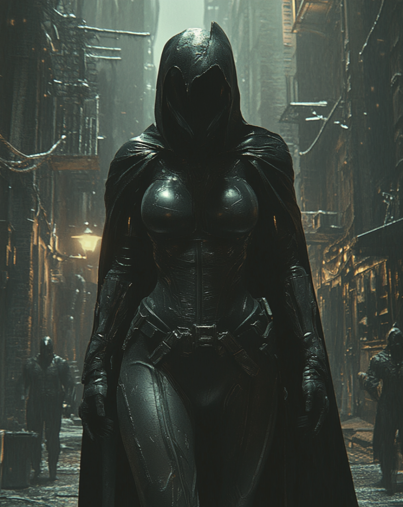

Selena Thompson (Umbra)

Youngest of Maria's daughters, Selena was born during a solar eclipse, a fact Maria considered significant. As a child, Selena was unnaturally quiet, preferring shadows to light and speaking very little. Her power manifested gradually—teachers reported she sometimes seemed to disappear in class, and neighborhood children claimed she could "melt into walls."
By 12, Selena could consciously manipulate shadows, using them as hiding places and eventually as transportation. Maria helped her understand her gifts by sharing old family stories about shadow-walkers in their ancestry.
While Elena focused on academics and Danielle on her social connections, Selena developed into the family's observer. She used her abilities to monitor gang activities around the diner, watching from the shadows and reporting movements to keep her family safe.
After high school, Selena worked as a night security guard at Boston Museum of Fine Arts, using her shadow abilities to catch potential thieves. She developed her power to create solid shadow constructs—simple weapons and tools that lasted briefly in light but remained permanent in darkness.
Maria's death shattered Selena's reserved demeanor. The once-quiet observer became a silent assassin, using shadow-walking to infiltrate gang hideouts and police stations, gathering evidence of corruption while leaving no trace.
Within the Tribulation, Selena handles reconnaissance and extraction. Her ability to travel through connected shadows lets her move the team between locations undetected. She rarely speaks now, communicating primarily through Elena's telepathic link, and has developed the disturbing ability to temporarily remove a person's shadow—causing disorientation and paranoia.
These three women, bound by blood and loss, transformed from Maria Thompson's daughters into Isaiah's instruments of vengeance, each carrying a piece of their mother's legacy while walking a path she never would have chosen for them.